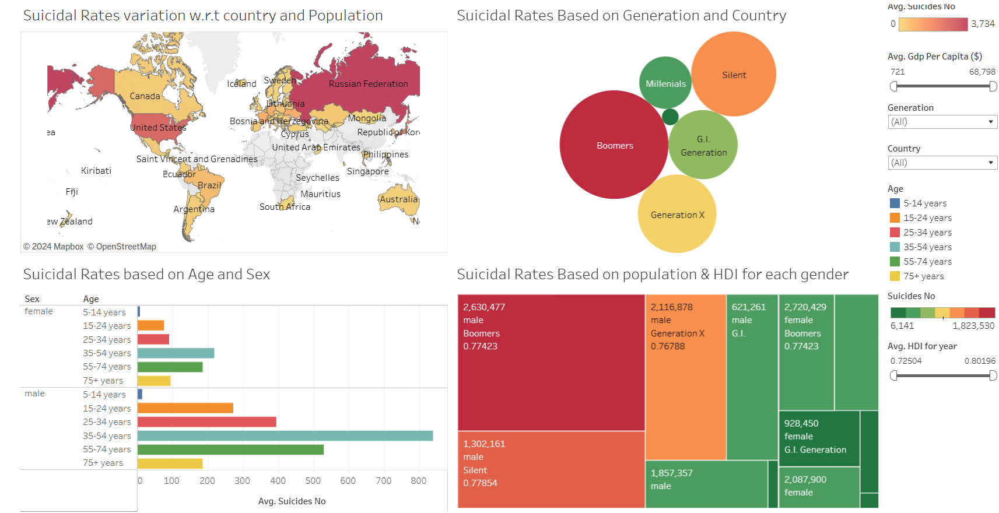
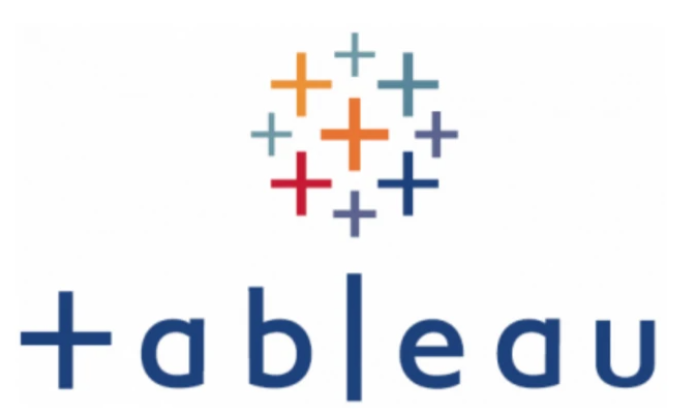
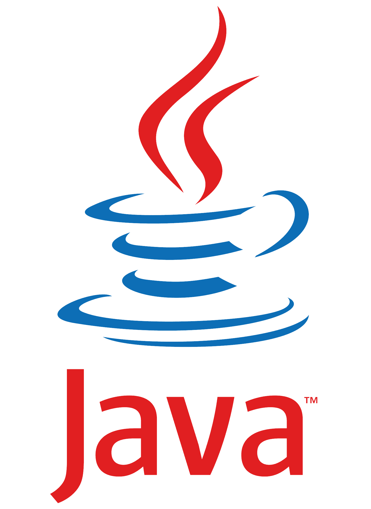
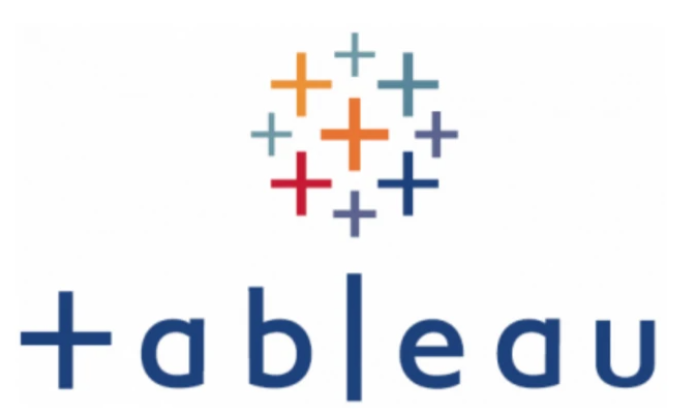
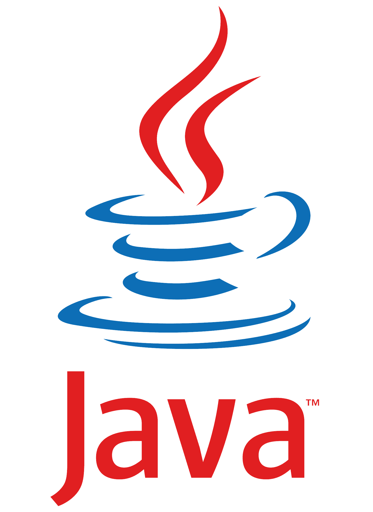

Check out my lastest Publications below
This research explores the application of deep learning techniques to predict the spread of volcanic fallout ash, a critical factor in mitigating the deadly impact of volcanic eruptions. The study employs a Conditional Generative Adversarial Network (cGAN) architecture to forecast ash dispersion patterns using diverse input data, such as weather maps and eruption scale parameters. This innovative approach reduces the computational resources required for traditional simulations, enabling faster and accurate predictions. The research aims to provide open-source access to the trained model, empowering communities and governments to prepare effectively for catastrophic events.

Developed a cost-effective face mask detection system integrated with a door unlocking mechanism. This system ensures adherence to mask-wearing protocols, especially in high-population areas like India, to mitigate the spread of COVID-19. It leverages advanced detection models to identify improperly worn masks and supports various mask types. Designed to enhance public safety, this solution automates mask compliance checks for restricted access areas.

Designed data visualizations in Tableau for suicide prevention, analyzing global trends and demographic patterns from the Suicide Rates Overview dataset (1985-2021). Developed interactive dashboards and stories to support targeted strategies for researchers, policymakers, and government agencies.
Developed a robust Electronic Medical Record (EMR) system using MySQL Workbench, featuring stored procedures, triggers, and indexes for optimized performance. Implemented an API, user authentication, role-based access control, and audit trails to enhance security and streamline patient, clinical, and administrative data management.
Developed MATLAB code to analyze the non-linear relationship between heart rate and temperature using ECG signals. The project involved generating, sampling, quantizing, and reconstructing ECG signals, utilizing datasets from the MIT-BIH Noise Stress Test Database and PhysioBank ATM. This work highlights the application of advanced signal processing techniques for realistic ECG modeling, noise handling, and accurate data reconstruction, contributing to biomedical signal analysis.
Developed a machine learning model to predict diabetes with high accuracy. Prepared the dataset using preprocessing techniques and evaluated multiple classifiers. Achieved an accuracy of 81.81% with KNN and SVM, outperforming Naive Bayes. This project emphasizes the role of data-driven models in healthcare predictions.
Created Tableau dashboards analyzing data from The Metabolome of Food Knowledge Database. Insights include identifying therapeutic compounds for disease mitigation and exploring the impact of dietary intake on cancer pathways, aiding drug development and cancer research.
Developed noise reduction, frequency, and amplitude filters for a configurable Digital Hearing Aid (DHA), addressing limitations of traditional analog models. The project improves sound clarity and adaptability, providing an advanced solution for individuals with hearing impairments.
Developed a smart door unlocking system that uses a Cascade classifier model trained in Google Colab to detect if a person is wearing a face mask. The system sends data to TinkerCad via ThingSpeak, where an Arduino Uno controls the door mechanism. The door unlocks only if the person is wearing a mask, enhancing safety and compliance in restricted areas.
Developed an air pollution monitoring system using Arduino IDE and an MQ135 gas sensor. The system measures CO2 levels in the atmosphere in real time and displays the pollution risk levels (Fresh Air, Poor Air, Very Poor Air) based on PPM readings via the serial monitor. This project contributes to environmental monitoring by providing continuous air quality assessments.
Developed an Automatic Rain Control and Monitoring System to conserve water by detecting rainfall and triggering an alarm. The system uses a rainwater sensor (vero board) that detects water through its conductive properties, completing the circuit and activating a buzzer. This project emphasizes resource conservation by alerting users during rainfall for timely action.
Developed a relative humidity monitoring system using the DHT11 humidity sensor, Proteus Professional, and 8051 Microcontroller. This project addresses the challenges of prawn and fish pond production maintenance while also enhancing safety for sea sailors and fishermen. By monitoring humidity levels in real-time, the system aims to reduce production losses and improve operational safety in aquatic environments.

Utilized Tableau Prep Builder to transform and unify datasets on Charlotte’s Neighborhood Profile Areas (NPAs). Designed interactive dashboards and stories to analyze socio-economic, environmental, and demographic factors. The analysis provides actionable insights into living conditions across Charlotte, enabling individuals to make informed relocation decisions.
Developed and configured an Intrusion Detection and Prevention System (IDPS) using SNORT on an Ubuntu victim machine. Customized detection and prevention rules to identify and mitigate live cyberattacks simulated from a Kali Linux attacker machine. This project demonstrates expertise in network security by leveraging SNORT to monitor and secure systems against potential threats.
Conducted a comprehensive web application security assessment using W3af, a powerful vulnerability scanner, on a cloud-hosted website. Deployed the scanner within a Kali Linux virtual machine to identify and evaluate potential security weaknesses. Analyzed detailed reports generated by W3af to assess vulnerability severity and formulate effective remediation strategies, enhancing the website's overall security posture.
This project focuses on Social Medai Addiction based on survey conducted on a class of students to determine of the student is addicted or not based on time spent through multivariate analysis.
Conducted a comprehensive network security analysis using Wireshark to evaluate Telnet and SSH protocols. Identified Telnet’s vulnerabilities, such as unencrypted credential transmission, and compared them to SSH’s robust encryption mechanisms. Analyzed packet data to detect potential exploitation patterns, extracting critical details like IP and MAC addresses. Demonstrated the importance of encrypted communication in securing sensitive network data.
Executed and analyzed dictionary and brute-force password cracking methods using Cain & Abel on a Windows XP virtual machine. Evaluated the effectiveness of password complexity, demonstrating the impact of length and character set on cracking time. Highlighted the importance of strong password policies, multi-factor authentication, and password management practices to mitigate unauthorized access.
Conducted web application security testing by exploiting SQL Injection vulnerabilities to bypass authentication, create backdoors, and manipulate user accounts. Demonstrated XSS attacks and database deletion, uncovering critical security flaws and emphasizing the importance of robust web security defenses.
Designed a web-based Bitcoin price prediction platform leveraging machine learning algorithms. Integrated historical and real-time data for accurate predictions, offering interactive visualizations, price trend analysis, and a user-friendly interface to monitor market dynamics effectively.

Developed a secure and scalable Event Management System, UniFiesta, tailored for university communities. Integrated features include user authentication, authorization, session management, RSVP functionality, and XSS protection. The system utilizes Node.js, Express, and MongoDB for a robust backend, and EJS templates for a dynamic, responsive user interface. Ensured data integrity through rigorous testing and implemented role-based permissions to safeguard user data.
Designed an interactive sales dashboard using Tableau to analyze daily sales and profit trends. This dashboard provides actionable insights into sales performance, profit margins, and key contributing factors, helping businesses make informed decisions. It features dynamic visualizations for tracking performance across different time periods and categories.


 


